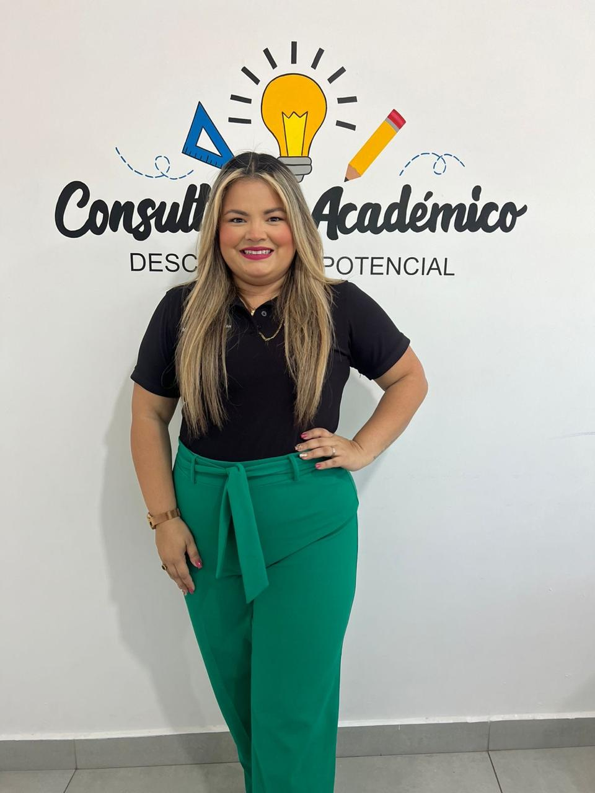

Fundadores
Mtra. Haydeé Carolina Román Ruiz
Fundadora del Consultorio Académico, la Maestra Haydee Carolina Román Ruiz es el rostro humano detrás de nuestra atención al cliente y comunicación con la comunidad. Con una calidez y profesionalismo inigualables, se encarga de gestionar nuestras redes sociales, dar a conocer el impacto de nuestro trabajo y buscar a los nuevos talentos que formarán parte de nuestra familia académica. Su compromiso y dedicación no solo fortalecen el vínculo con nuestros alumnos y sus familias, sino que también impulsan el crecimiento constante de este proyecto educativo.
Mtro. Emilio Josué Ruiz Contreras
Fundador y Coordinador General del Consultorio Académico, el Maestro Emilio Josué Ruiz Contreras es un docente con una profunda vocación, ética y profesionalismo. Es el encargado de diseñar e implementar los cursos que forman parte de nuestra oferta educativa, además de liderar la capacitación del equipo docente. Su compromiso con la enseñanza y su enfoque en la excelencia impulsan el crecimiento diario de este proyecto, asegurando que cada estudiante alcance su máximo potencial. Con pasión y dedicación, trabaja incansablemente para que el Consultorio Académico sea un espacio de aprendizaje y desarrollo constante.